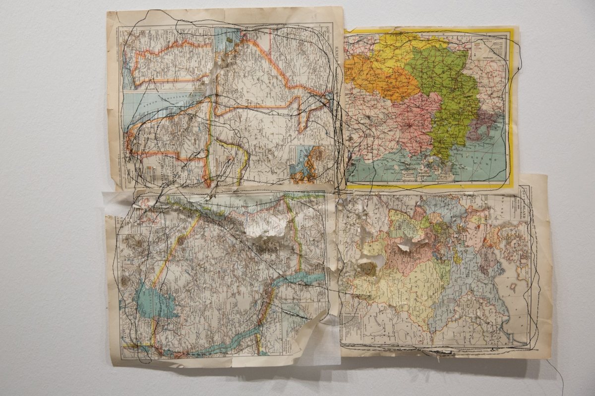
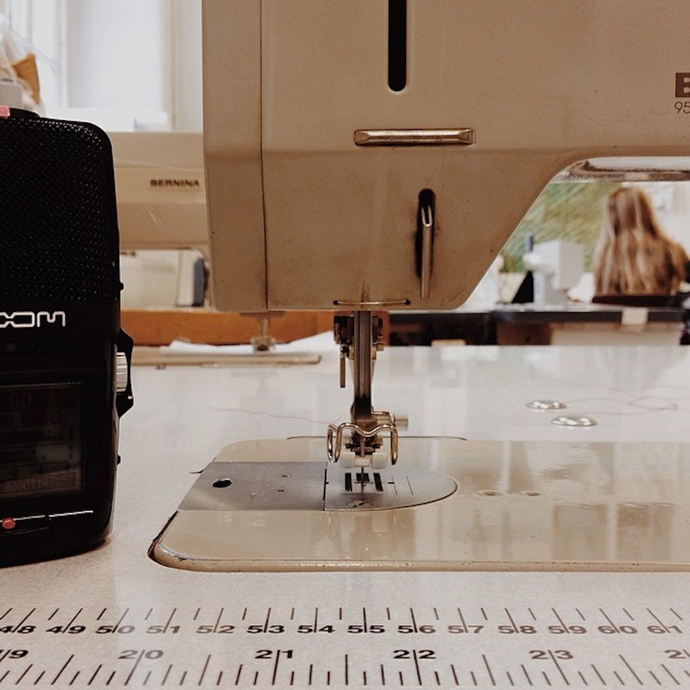

Scar Mechanics
Atonal composition in three parts commissioned by performance artist Ana Mendes for her performance 'Map Series'.
In 'Map Series', Ana explores the violent heritage of colonialism, using a sewing machine to stitch across maps of Portuguese colonial holdings, representing the wounds inflicted on subjected peoples. The performance is accompanied by the 30 min composition created entirely from recordings of various sewing machines.
